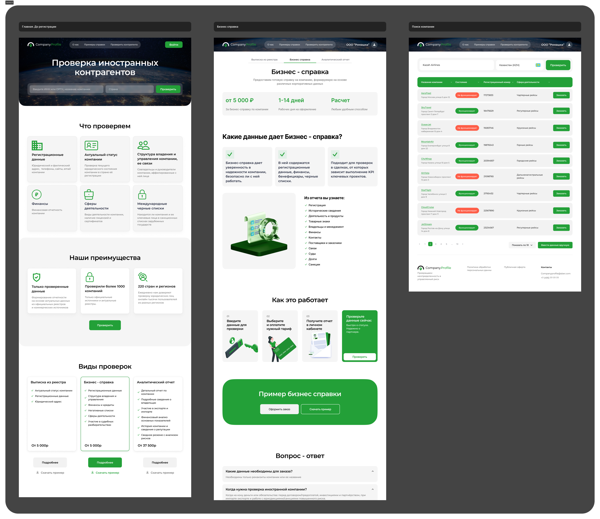
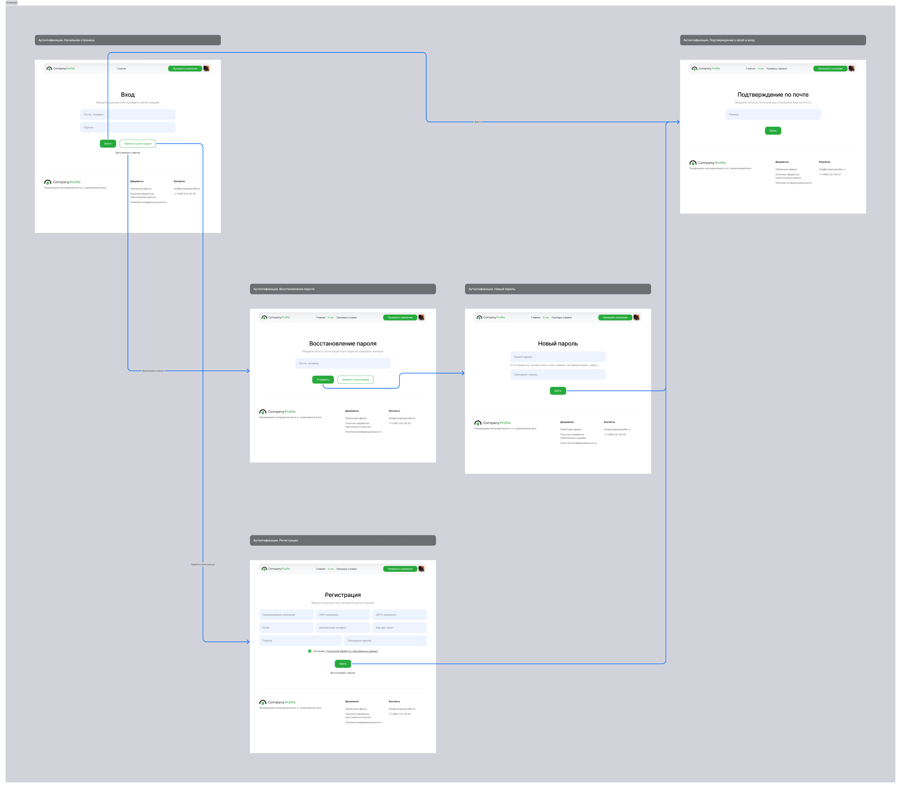

Миссия для пользователя
Быстро проверить компанию и получить понятный результат,
чтобы принять решение без лишних усилий и потери времени
Переосмыслила продуктовую логику и упростила путь пользователя к результату

Cоmpany Prfile — B2B сервис для проверки компаний: собирает данные из разных источников и помогает пользователям оценить риски перед сотрудничеством.
Упростить пользовательский сценарий и увеличить долю пользователей, доходящих до проверки компании.
Текущий интерфейс не помогает пользователю быстро начать сценарий проверки:
он перегружен и не выстраивает приоритеты между элементами.
В результате пользователь теряется и не доходит до ключевого действия.
Frontend разработчик, backend разработчик, аналитик, тестировщик, пм
Интерфейс сервиса не поддерживает основной пользовательский сценарий:
— нет явной точки входа
— ключевое действие не выделено
— структура перегружена
— пользователь не понимает, что произойдёт дальше
Быстро проверить компанию и получить понятный результат,
чтобы принять решение без лишних усилий и потери времени
Малый и средний бизнес:

— отсутствует единый пользовательский сценарий
— нет явной точки входа
— усложнён путь к результату
— отсутствует предсказуемость
— тарифы не помогают принять решение
— перегруженность интерфейса
— слабая визуальная иерархия
— дублирующиеся паттерны
— слабый акцент на CTA
— сложность сканирования
Я проанализировала Контур.Фокус, Rusprofile и Crunchbase, чтобы понять, как в похожих сервисах выстроен пользовательский сценарий.

— поиск как основная точка входа
— фокус на одном ключевом действии
— простая иерархия вместо перегрузки
— структура ведёт пользователя по сценарию
— данные сгруппированы и легко сканируются
Эффективные сервисы проверки компаний фокусируются на быстром входе через поиск и выстраивают интерфейс вокруг сценария получения результата.
Эти принципы легли в основу редизайна.
На основе анализа интерфейса я сформулировала несколько гипотез, направленных на упрощение сценария и повышение конверсии в ключевое действие.
Визуальная иерархия
Если выстроить чёткую иерархию (заголовок → поиск → контент → CTA), пользователи быстрее поймут структуру страницы и найдут нужное действие.
Тарифы и выбор
Если упростить структуру тарифов и сделать различия между ними более очевидными, пользователям будет легче сравнивать варианты и принимать решение.
Упрощение структуры
Если сократить количество блоков и убрать второстепенный контент с первого экрана, пользователям будет проще ориентироваться и воспринимать интерфейс.
Поиск как основная точка входа
Если вынести поиск в центр интерфейса и сделать его главным элементом, пользователи будут быстрее начинать сценарий проверки и реже теряться на первом экране.
Сценарий взаимодействия
Если добавить блок с объяснением “как это работает”, пользователи будут лучше понимать процесс и чувствовать уверенность перед началом действия.
На основе анализа интерфейса я сформулировала несколько гипотез, направленных на упрощение сценария и повышение конверсии в ключевое действие.
Гипотезы были проверены на интерактивном прототипе через юзабилити-тестирование.
Пользователи выполняли сценарий проверки компании: от ввода данных до выбора тарифа и получения результата.
• пользователи быстрее начинают сценарий, когда поиск находится в фокусе интерфейса
• упрощённая структура снижает время на понимание страницы
• чёткая визуальная иерархия помогает быстрее находить ключевые действия
• перегруженные тарифы замедляют выбор и вызывают сомнения
• наличие понятного сценария (“как это работает”) снижает количество вопросов и повышает уверенность
На основе анализа интерфейса я сформулировала несколько гипотез, направленных на упрощение сценария и повышение конверсии в ключевое действие.
Визуальная иерархия
Если выстроить чёткую иерархию (заголовок → поиск → контент → CTA), пользователи быстрее поймут структуру страницы и найдут нужное действие.
Сценарий взаимодействия
Если добавить блок с объяснением “как это работает”, пользователи будут лучше понимать процесс и чувствовать уверенность перед началом действия.
Упрощение структуры
Если сократить количество блоков и убрать второстепенный контент с первого экрана, пользователям будет проще ориентироваться и воспринимать интерфейс.
Поиск как основная точка входа
Если вынести поиск в центр интерфейса и сделать его главным элементом, пользователи будут быстрее начинать сценарий проверки и реже теряться на первом экране.
В результате были созданы следующие экраны и сценарии
